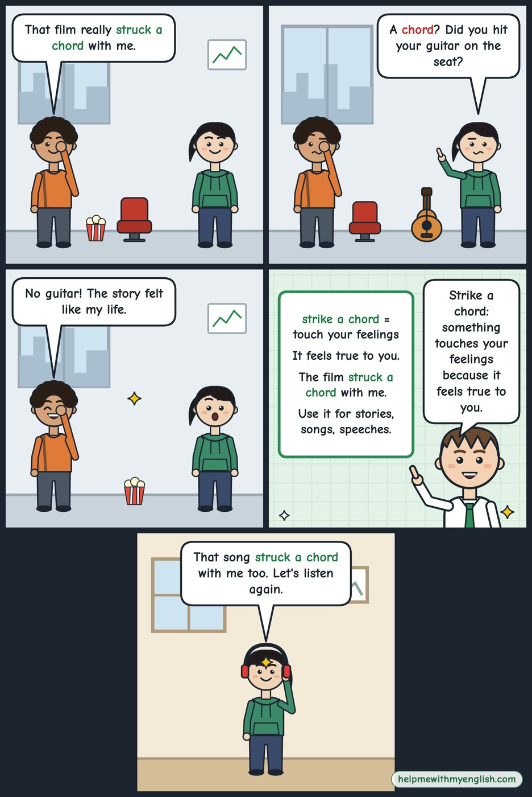

strike a chord
To make people feel something because it matches their own feelings or experience.
Her speech about moving abroad really struck a chord with me.
Tip: Use it as 'something strikes a chord (with someone)'; the subject is the thing that moves people, such as a song, a story or a comment, and the past form is 'struck a chord'.
Hear it in conversation
Workbook
1. What does it mean?
In this conversation, what does 'struck a chord' mean?
2. Fill the gap
The manager's honest comment about feeling tired all the time with most of the team, and several of them thanked her afterwards.
3. Choose the best reply
Ken: I wasn't going to go to the talk about starting a new career at forty, but it was weirdly relevant to me.
4. Your turn: speak
Tell me about a book, film or song that really meant something to you. Why did it affect you so much?
Show an example answer
A few years ago I watched a film about a family who move to a new city, and it really struck a chord with me because I had just moved for work. I recognised the loneliness and the small daily struggles they showed. I still think about it whenever I feel homesick.
Answer key: strike a chord
- 1. D. It felt true to Amira's own life and affected her emotionally.
- 2. struck a chord
- 3. A. Sounds like it struck a chord with you.
- 4. Example: A few years ago I watched a film about a family who move to a new city, and it really struck a chord with me because I had just moved for work. I recognised the loneliness and the small daily struggles they showed. I still think about it whenever I feel homesick.
See it in a comic
